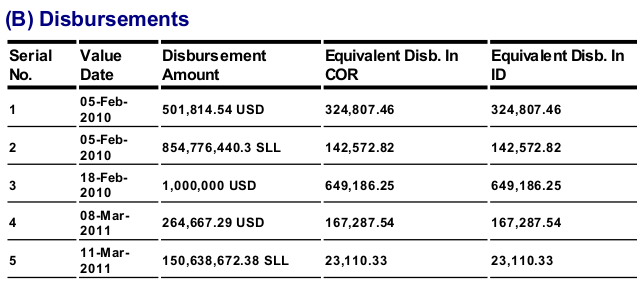

Hi all,
@Herman yes, for many agreements the exchange rate is at the level of the contract - where would this go in IATI data, as a single project can be covered by several contracts - if contract = commitment, perhaps it can go there? Would that then be linked to all transactions made under that contract - I do not know enough about the nesting etc to be sure?
However, there is another situation. Attached below are a set of screenshots showing how the statement for a loan specifies (or allows calculation of) the exchange rates for the different value dates. In this case, the exchange rate is set per transaction.
The reason I am inclined to push this is that in most aid recipient countries, the debt management office/unit is the most competent user of aid flow data as it tends to be a far stronger legal requirement to track the disbursements as more disbursements means more indebtedness/repayments. If IATI could allow transaction level exchange rates (specifying the sending/loan currency, the rate applied on that value-date and the currency of receipt) then it might pick up a significant number of users. If not, all aid recipient countries will continue to collect this data separately/manually so are likely to continue to find IATI peripheral to their needs.
The ideal endpoint is that CS-DRMS/DEMFAS debt management systems would pull data directly from IATI, eliminating a huge amount of manual data entry and potential for error.
The bigger issue here (and also starting to crop us in traceability etc) is that IATI is not an accounting system e.g. with double entry etc. If it was, then all transactions would have a debit and a credit, a sender and a receiver (with an official receiver/org ID), a send currency, a receipt currency (and therefor exchange rates built in). In this scenario, traceability is much easier to solve and I think this has to be a serious consideration going forwards.
As it is, if a donor reports in e.g. SDR or Japanese Yen, but the recipients receive the funds into a local currency bank account, they typically struggle to make any connection with the amounts shown in IATI data - and again are disinclined to use IATI.
/end ramble!
Matt


{kind=link}
{kind=link}